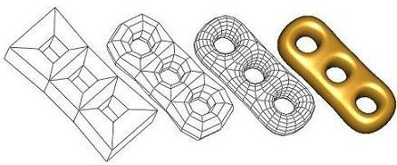

|
CGAL 6.1 - 3D Surface Subdivision Methods
|
Loading...
Searching...
No Matches
|
CGAL 6.1 - 3D Surface Subdivision Methods
|

Subdivision methods are simple yet powerful ways to generate smooth surfaces from arbitrary polygonal meshes. Unlike spline-based surfaces (e.g NURBS) or other numeric-based modeling techniques, users of subdivision methods do not need the mathematical knowledge of the subdivision methods. The natural intuition of the geometry suffices to control the subdivision methods.
Subdivision_method_3 works for the classes Polyhedron_3 and Surface_mesh, as they are models of the concept MutableFaceGraph, and it aims to be easy to use and to extend. Subdivision_method_3 is not a class, but a namespace which contains four popular subdivision methods and their refinement functions. These include Catmull-Clark, Loop, Doo-Sabin and \( \sqrt{3}\) subdivisions. Variations of these methods can be easily extended by substituting the geometry computation of the refinement host.
In this chapter, we explain some fundamentals of subdivision methods. We focus only on the topics that help you understand the design of the package. Details on subdivision methods can be found in [6]. Some terminology introduced in this section will be used again in later sections. If you are only interested in using a specific subdivision method, Section A Quick Example: Catmull-Clark Subdivision gives a quick tutorial on using a Catmull-Clark subdivision.
A subdivision method recursively refines a coarse mesh and generates an ever closer approximation to a smooth surface. The coarse mesh can have arbitrary shape, but it has to be a 2-manifold. In a 2-manifold, every interior point has a neighborhood homeomorphic to a 2D disk. Subdivision methods on non-manifolds have been developed, but are not considered in Subdivision_method_3. The chapter teaser shows the steps of Catmull-Clark subdivision on a CAD model. The coarse mesh is repeatedly refined by a quadrisection pattern, and new points are generated to approximate a smooth surface.
Many refinement patterns are used in practice. Subdivision_method_3 supports the four most popular patterns, and each of them is used by Catmull-Clark[1], Loop[4], Doo-Sabin[2] and \( \sqrt{3}\) subdivision[3] (left to right in the figure below). We name these patterns by their topological characteristics instead of the associated subdivision methods. PQQ indicates the Primal Quadtrateral Quadrisection. PTQ indicates the Primal Triangle Quadrisection. DQQ indicates the Dual Quadtrateral Quadrisection. \( \sqrt{3}\) indicates the converging speed of the triangulation toward the subdivision surface.
The figure demonstrates these four refinement patterns on the 1-disk of a valence-5 vertex/face. Refined meshes are shown below the source meshes. Points on the refined mesh are generated by averaging neighbor points on the source mesh. A graph, called stencil, determines the source neighborhood whose points contribute to the position of a refined point. A refinement pattern usually defines more than one stencil. For example, the PQQ refinement has a vertex-node stencil, which defines the 1-ring of an input vertex; an edge-node stencil, which defines the 1-ring of an input edge; and a face-node stencil, which defines an input face. The stencils of the PQQ refinement are shown in the following figure. The blue neighborhoods in the top row indicate the corresponding stencils of the refined nodes in red.
Stencils with weights are called geometry masks. A subdivision method defines a geometry mask for each stencil, and generates new points by averaging source points weighted by the mask. Geometry masks are carefully chosen to meet requirements of certain surface smoothness and shape quality. The geometry masks of Catmull-Clark subdivision are shown below.
The weights shown here are unnormalized, and \( n\) is the valence of the vertex. The generated point, in red, is computed by a summation of the weighted points. For example, a Catmull-Clark face-node is computed by the summation of \( 1/4\) of each point on its stencil.
A stencil can have an unlimited number of geometry masks. For example, a face-node of PQQ refinement may be computed by the summation of \( 1/5\) of each stencil node instead of \( 1/4\). Although it is legal in Subdivision_method_3 to have any kind of geometry mask, the result surfaces may be odd, not smooth, or not even exist. [6] explains the details on designing masks for a quality subdivision surface.
Assuming that you are familiar with Surface_mesh, you can integrate Subdivision_method_3 into your program without much effort.
File Subdivision_method_3/CatmullClark_subdivision.cpp
This example demonstrates the use of the Catmull-Clark subdivision method on a Surface_mesh. There is only one line deserving a detailed explanation:
Subdivision_method_3 specifies the namespace of the subdivision functions. CatmullClark_subdivision(P, params::number_of_iterations(d)) computes the Catmull-Clark subdivision surface of the polygon mesh pmesh after d iterations of the refinements. The polygon mesh pmesh is passed by reference, and is modified (i.e. subdivided) by the subdivision function.
This example shows how to subdivide a Surface_mesh with Subdivision_method_3. An application-defined polygon mesh might use a specialized kernel and/or a specialized internal container. There is one major restriction on the application-defined polygon mesh to work with Subdivision_method_3: The primitives (such as vertices, halfedges and faces) in the internal container are sequentially ordered (e.g. std::vector and std::list). This implies that the iterators traverse the primitives in the order of their creations/insertions.
Section Refinement Host gives detailed explanations on this two restrictions.
Subdivision_method_3 is designed to allow customization of the subdivision methods. This section explains the implementation of the Catmull-Clark subdivision function in Subdivision_method_3. The implementation demonstrates the customization of the PQQ refinement to Catmull-Clark subdivision.
When a subdivision method is developed, a refinement pattern is chosen, and then a set of geometry masks is developed to position the new points. There are three key components to implement a subdivision method:
E. Catmull and J. Clark chose the PQQ refinement for their subdivision method, and developed a set of geometry masks to generate (or more precisely, to approximate) the B-spline surface from the control mesh. Subdivision_method_3 provides a function that glues all three components of the Catmull-Clark subdivision method.
PolygonMesh must be an instantiation of Polyhedron_3, Surface_mesh, or any other model of the concept MutableFaceGraph. It is a generic mesh data structure for arbitrary 2-manifolds. PQQ(), which refines the control mesh p, is a refinement host that uses a policy class Mask<PolygonMesh> as part of it geometry computation. During the refinement, PQQ() computes and assigns new points by cooperating with the mask. To implement Catmull-Clark subdivision, Mask, the geometry policy, has to realize the geometry masks of Catmull-Clark subdivision. The number of iterations as well as the vertex point map can be specified using the named parameter np.
To implement the geometry masks, we need to know how a refinement host communicates with its geometry masks. The PQQ refinement defines three stencils, and hence three geometry masks are required for Catmull-Clark subdivision. The following class defines the interfaces of the stencils for the PQQ refinement.
Each class function in PQQMask_3 computes a new point based on the neighborhood of the primitive descriptor, and assigns the new point to Point_3& pt.
We realize each class function with the geometry masks of Catmull-Clark subdivision.
To invoke the Catmull-Clark subdivision method, we call PQQ() with the Catmull-Clark masks that we have just defined.
Loop, Doo-Sabin and \( \sqrt{3}\) subdivisions are implemented using a similar process: pick a refinement host and implement the geometry policy. The key of developing your own subdivision method is implementing the right combination of the refinement host and the geometry policy. It is explained in the next two sections.
A refinement host is a template function of a polygon mesh class and a geometry mask class. It refines the input polygon mesh, and computes new points through the geometry masks. Subdivision_method_3 supports four refinement hosts: primal quadrilateral quadrisection (PQQ), primal triangle quadrisection (PTQ), dual quadrilateral quadrisection (DQQ) and \( \sqrt{3}\) triangulation. Respectively, they are used by Catmull-Clark, Loop, Doo-Sabin and \( \sqrt{3}\) subdivision.
The mesh class must be a model of MutableFaceGraph and it must be a triangle mesh or a polygon mesh, and the mask is a policy class realizing the geometry masks of the subdivision method.
A refinement host refines the input polygon mesh, maintains the stencils (i.e., the mapping between the control mesh and the refined mesh), and calls the geometry masks to compute the new points. In Subdivision_method_3, refinements are implemented as a sequence of connectivity operations (mainly Euler operations). The order of the connectivity operations plays a key role when maintaining stencils. By matching the order of the source submeshes to the refined vertices, no flag in the primitives is required to register the stencils. It avoids the data dependency of the refinement host on the polygon mesh class. To make the ordering trick work, the polygon mesh class must have a sequential container, such as a vector or a linked-list, as the internal storage. A sequential container guarantees that the iterators of the polygon mesh always traverse the primitives in the order of their insertions. Non-sequential structures such as trees or maps do not provide the required ordering, and hence cannot be used with Subdivision_method_3.
Although Subdivision_method_3 does not require flags to support the refinements and the stencils, it still needs to know how to compute and store the geometry data (i.e. the points). The classes of Subdivision_method_3 have as optional template argument a vertex property map that provides a mapping between vertices and points.
Refinement hosts PQQ and DQQ work on a general polygon mesh, and PTQ and Sqrt3 work on a triangulated polygon mesh. The result of PTQ and Sqrt3 on a non-triangulated polygon mesh is undefined. Subdivision_method_3 does not verify the precondition of the mesh characteristics before the refinement.
For details of the refinement implementation, interested users should refer to [5].
A geometry policy defines a set of geometry masks. Each geometry mask is realized as a member function that computes new points of the subdivision surface.
Each geometry mask receives a primitive descriptor (e.g. halfedge_descriptor) of the control mesh, and returns a Point_3 to the subdivided vertex. The function collects the vertex neighbors of the primitive descriptor (i.e. nodes on the stencil), and computes the new point based on the neighbors and the mask (i.e. the stencil weights).
This figure shows the geometry masks of Catmull-Clark subdivision. The weights shown here are unnormalized, and \( n\) is the valence of the vertex. The new points are computed by the summation of the weighted points on their stencils. Following codes show an implementation of the geometry mask of the face-node. The complete listing of a Catmull-Clark geometry policy is in the Section Catmull-Clark Subdivision.
In this example, the computation is based on the assumption that the Point_3 is the CGAL::Point_3. It is an assumption, but not a restriction. You are allowed to use any point class as long as it is defined as the Point_3 in your polygon mesh. You may need to modify the geometry policy to support the computation and the assignment of the specialized point. This extension is not unusual in graphics applications. For example, you might want to subdivide the texture coordinates for your subdivision surface.
The refinement host of Catmull-Clark subdivision requires three geometry masks for polygon meshes without open boundaries: a vertex-node mask, an edge-node mask, and a face-node mask. To support polygon meshes with boundaries, a border-node mask is also required. The border-node mask for Catmull-Clark subdivision is listed below, where ept returns the new point splitting edge and vpt returns the new point on the vertex pointed by edge.
The mask interfaces of all four refinement hosts are listed below. DQQMask_3 does not have the border-node stencil because the refinement host of the DQQ refinement does not support global boundaries in the current release. This might change in future releases.
The source codes of CatmullClark_mask_3, Loop_mask_3, DooSabin_mask_3, and Sqrt3_mask_3 are the best sources of learning these stencil interfaces.
Subdivision_method_3 supports Catmull-Clark, Loop, Doo-Sabin and \( \sqrt{3}\) subdivisions by specializing their respective refinement hosts. They are designed to work on any model of a MutableFaceGraph such as Polyhedron_3 and Surface_mesh. If your application uses a polygon mesh with a specialized geometry kernel, you need to specialize the refinement host with a geometry policy based on that kernel.
Subdivision_method_3 supports four practical subdivision methods on a Polyhedron_3 with points with Cartesian coordinates. More subdivision methods can be supported through the specialization of refinement hosts with custom geometry masks. The following example develops a subdivision method generating an improved Loop subdivision surface.
File Subdivision_method_3/Customized_subdivision.cpp
The points generated by the geometry mask are semantically required to converge to a smooth surface. This is the requirement imposed by the theory of the subdivision surface. Subdivision_method_3 does not enforce this requirement, nor will it verify the smoothness of the subdivided mesh. Subdivision_method_3 guarantees the topological properties of the subdivided mesh. A genus- \( n\) 2-manifold is assured to be subdivided into a genus- \( n\) 2-manifold. But when specialized with ill-designed geometry masks, Subdivision_method_3 may generate a surface that is odd, not smooth, or that does not even exist.
This package was initially developed by Le-Jeng Andy Shiue. For CGAL 4.11 it was generalized to work on any model of a MutableFaceGraph by Andreas Fabri and Mael Rouxel-Labbé.